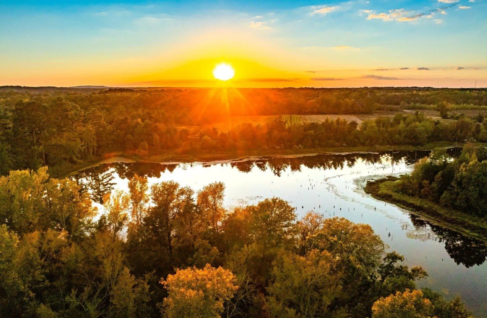
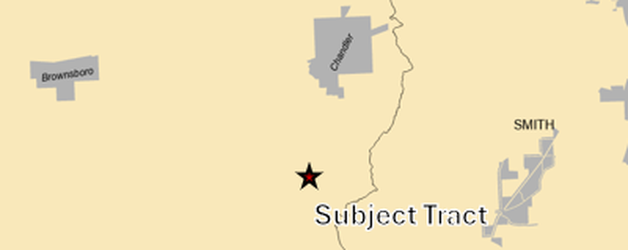

Community News · Lake Palestine, Henderson County
A state park is coming to Lake Palestine near Chandler: Here’s what we know
A Chandler pecan family’s land, a foundation that moved fast and a voter-approved parks fund are setting the stage for a new Texas state park on about 650 acres of pines, pecans and lakefront in Henderson County
There is good news on the water.

On Thursday, Oct. 1, the Texas Parks and Wildlife Foundation (TPWF) bought about 650 acres on Lake Palestine in Henderson County for a future Texas state park, the foundation announced Oct. 2. The land has belonged to the Pollard family, the family behind Chandler’s Texas Pecan Nursery, since 1940.
“This land is part of my soul,” Sam Pollard, president of Texas Pecan Nursery, said in the foundation’s release. “It means a lot to me that we can leave a legacy for people to enjoy.”
The park will not open right away. The foundation will hold the land until the Texas Parks and Wildlife Department (TPWD) can buy it, expected in late 2027. After that, TPWD plans to open the park in phases and invite the public to weigh in. No opening date and no name have been announced.
Here is a one-stop look at what we know now, and the people to thank.
Where is it?
The property sits about 18 miles west of Tyler and 20 miles east of Athens, with frontage on Lake Palestine, according to TPWF.
KETK News described the site as “roughly halfway between Chandler and Moore Station.” A vicinity map TPWD released with its proposal this summer marks the tract south of Chandler, on the Henderson County side of the lake.

The property’s sales listing, from TexasLand, the brokerage that represented the Pollard family, gave its address as County Road 3411, Chandler, and listed road frontage on county roads 3411 and 3412.
The land is not open to visitors yet. As the Texas Tribune put it, “it will be years before visitors can pitch a tent or launch a kayak there.”
What’s on the land
TPWF describes the property as native East Texas pine forest, ponds, pecan orchards and lakefront. The foundation calls it one of the largest contiguous landholdings with frontage on the lake, and says buying it protects “one of the last large blocks of habitat in this part of East Texas.”
The Texas Tribune reported roughly 2,000 feet of frontage on Lake Palestine, along with native grasses and roughly 10 ponds. The sales listing, as reported by the Houston Chronicle, described 10 lakes and ponds ranging from about half an acre to roughly 7 acres, and land that is about 60 percent wooded and 40 percent pasture.
The land provides habitat for white-tailed deer, bobcats, waterfowl and a variety of woodland and water-dependent birds, according to TPWF.
“There’s a lot of really big old growth pines on it,” Josh Smith of TexasLand told the Chronicle.
What could the park offer someday?
Plans are early, but TPWF’s release lists what is planned once the park is developed: hike and bike trails, traditional and primitive campsites, day-use areas and lakefront access. Habitat restoration will also be an important part of getting the land ready, the foundation said.
Lake Palestine reaches depths of 58 feet and is popular for boating, paddling, swimming and fishing for bass, catfish, crappie and sunfish, according to TPWF. The foundation said future visitors will also enjoy blufftop lake views, wildlife and bird watching, and the property’s existing pecan orchard.
In an agenda item prepared for the Texas Parks and Wildlife Commission’s Aug. 20 meeting, TPWD staff described the land as suitable for overnight and day-use areas; lake recreation such as boating, swimming and paddleboarding; hunting and fishing, including waterfowl hunting access; and hiking trails.
“We are excited to add this East Texas gem to the Texas State Park system,” said Rodney Franklin, director of Texas State Parks. “Families will be able to enjoy lake recreation on Lake Palestine, along with the pecan trees that are a signature of the property.”
Thank you, Pollard family
This park starts with a family’s generosity.
The Pollards have owned the land since 1940, and it was part of the family’s longtime Texas Pecan Nursery operation, TPWF said. Sam Pollard grew up working, hunting and fishing on the property, and his children and grandchildren have their own memories of time spent there, according to the foundation. For the family, the decision means land that has been theirs for generations will stay largely undeveloped and eventually be opened for others to enjoy.
Texas Pecan Nursery is a family-owned business in Chandler, with its sales yard on State Highway 31 West, according to the nursery’s catalogs. Its catalog says the business was started by Sam A. Pollard Sr. and his wife, Junnie Pollard, and has been in production since 1925.
Franklin thanked the family directly in the release: “We are grateful to our partners, the Texas Parks and Wildlife Foundation, and to owner Sam Pollard and his family who have graciously allowed this special slice of the Pineywoods to be accessible for generations of Texans.”
He told KETK News, “We are fortunate that we have such a great family willing to leave their property for a legacy for a state park.”
More people to thank
- Texas Parks and Wildlife Foundation: The Dallas-based nonprofit stepped in to lead the purchase after TPWD identified the property as a potential park site in 2025. TPWF said it is investing more than $10 million and will make more investments in the land before handing it to TPWD.
- Anne Brown, TPWF executive director: “Opportunities to protect a property like this don’t come along very often, and when they do, timing is critical,” Brown said. “TPWF was able to step in and secure this land now so it can ultimately become a place where generations of Texans can enjoy the outdoors. This is a great example of what public-private partnership can accomplish for conservation in Texas.”
- Donors: The NextEra Energy Foundation provided $100,000 for the project, according to TPWF. The foundation also used its Land Conservation Loan Fund, a donor-supported revolving fund built to act fast on time-sensitive land deals. Lyda Hill Philanthropies was an inaugural funder of that loan fund.
- Texas State Parks and TPWD staff: Smith told the Texas Tribune the agency was looking at East Texas sites and reached out about the property, which was on the market. Agency leaders, park planners and wildlife biologists made extensive site visits and evaluations, and the property stayed under contract for nearly a year while the state completed studies, the Tribune reported.
- TexasLand and Josh Smith: The brokerage represented the Pollard family. “The first time that I went out there, I thought, this place looks like a state park,” Smith, a co-founder of TexasLand, told the Tribune. “It just had that look.” Smith also told the Chronicle he believed some “vocal state representatives” had urged the agency to look at East Texas. He did not name them.
- Texas voters: In November 2023, Texans approved Proposition 14, creating the $1 billion Centennial Parks Conservation Fund for buying land and developing new state parks, according to TPWD. TPWF says TPWD will be able to buy this land when more money from that fund becomes available.
How the money works
TPWF bought the land first so the chance would not slip away. Brown said at the Texas Tribune Festival that this kind of philanthropy “brings creativity to the table,” because the foundation can buy land and hold it until the state is able to buy it, the Tribune reported.
TPWD plans to buy the property from TPWF in late 2027, when more money from the Centennial Parks Conservation Fund becomes available, according to the foundation. Madelon Allen, a public information officer with TPWD’s State Parks office, told the Tribune the extra time lets the state earn more interest on money in the fund before tapping it. Under the Texas Constitution, interest earned by the fund may only be used to create and improve state parks, TPWD says.
The final sale price was not disclosed, the Chronicle reported. The ranch had been listed for $9,995,000.
When will it open?
No opening date has been set.
TPWD plans to open the park in phases, beginning with guided access, followed by day use and eventually full day and overnight access, according to TPWF. After TPWD buys the property, the agency will invite public input on options for the park.
For parks bought with Centennial fund money, TPWD’s website lays out three phases: facilitated public day use, such as tours, events, paddling or birding, within 12 months of purchase; expanded day use with basics such as trails, parking and restrooms within 18 months; and a fully open park with roads, utilities and facilities within 48 months. TPWD has not announced a schedule specific to the Lake Palestine park.
Two other new parks show how that first phase looks. Bear Creek State Park and Post Oak Ridge State Park were both acquired in 2025, and both are offering occasional guided hikes, according to TPWD.
Part of a bigger picture
TPWD’s commission agenda said the new park will serve a region “currently considered to be underserved.”
Franklin told KETK News that Texas is losing more than 700 acres of rural land to development each day, and that less than 5 percent of Texas land is publicly accessible.
The Lake Palestine park joins other new parks announced since voters created the Centennial fund, including Bear Creek State Park in Uvalde County, Post Oak Ridge State Park along the Colorado River and Silver Lake State Park in Edwards and Kinney counties, according to TPWD and the Dallas Morning News. TPWF said its recent projects with TPWD include Palo Pinto Mountains State Park, Powderhorn State Park and Wildlife Management Area, Trinity River Wildlife Management Area and an expansion of Enchanted Rock State Natural Area.
State parks are good neighbors for local economies, too. A Texas A&M University study released by TPWF in 2019 found Texas state parks generated more than $891 million in sales activity statewide in 2018 and had a $240 million impact on Texas residents’ incomes.
How to stay in the loop
- Public input: TPWD will invite public input on the park’s future after it buys the land from TPWF, the foundation said.
- Texas Parks and Wildlife Foundation: tpwf.org, 214-720-1478
- TPWD Centennial Parks page: tpwd.texas.gov/state-parks/park-information/parks-fund
- Kickapoo Kolache: We will keep following this story and share news as soon as it is announced.
As Franklin put it, this is a “special slice of the Pineywoods.” Thanks to the Pollard family and many partners, it is on its way to becoming a state park for everyone to enjoy.
Sources
- Texas Parks and Wildlife Foundation, “Texas Parks and Wildlife Foundation Secures 650 Acres for Future State Park on Lake Palestine,” news release, Oct. 2, 2026. https://www.tpwf.org/tpwf-secures-650-acres-on-lake-palestine/
- Texas Tribune (Alejandra Martinez), “A 650-acre ranch on Lake Palestine will become Texas’ next state park,” Oct. 2, 2026. https://www.texastribune.org/2026/10/02/lake-palestine-east-texas-park/
- Tyler Morning Telegraph (staff reports), “650 acres on Lake Palestine acquired for future Texas State Park,” Oct. 3, 2026. https://tylerpaper.com/2026/10/03/texas-parks-and-wildlife-foundation-secures-650-acres-on-lake-palestine-for-future-state-park/
- KETK (Daisy Escatel), “Texas secures 650 acres for future state park expansion,” Oct. 2, 2026. https://www.ketk.com/news/local-news/texas-secures-650-acres-for-future-state-park-expansion/
- KLTV (Hesston Woodlock), “Texas Parks and Wildlife Foundation invests millions in future state park at Lake Palestine,” Oct. 2, 2026. https://www.kltv.com/2026/10/02/texas-parks-wildlife-foundation-invests-millions-future-state-park-lake-palestine/
- Dallas Morning News (Sarah Bahari), “Lakefront ranch near Dallas will become new Texas state park after $10 million purchase,” Oct. 2, 2026. https://www.dallasnews.com/news/texas/article/lakefront-ranch-near-dallas-new-texas-state-park-22459597.php
- Houston Chronicle (Molly Wilhelm), “Historic 86-year-old Texas family ranch saved from developers to become state park,” Oct. 2, 2026. https://www.chron.com/texas/article/new-texas-park-lake-palestine-22457647.php
- Texas Parks and Wildlife Department, Commission meeting agenda, Aug. 20, 2026, Item 11, “Land Acquisition – Henderson County – Approximately 650 Acres” (with location, vicinity and site maps). https://tpwd.texas.gov/business/feedback/meetings/2026/0820/agenda/item.phtml?item=11
- Texas Parks and Wildlife Department, “Centennial Parks Conservation Fund,” web page, updated Aug. 28, 2026. https://tpwd.texas.gov/state-parks/park-information/parks-fund
- Texas Parks and Wildlife Department, “Texas Parks and Wildlife Department, Commission Thank Texans for Approving Prop 14,” news release, Nov. 8, 2023. https://tpwd.texas.gov/newsmedia/releases/?req=20231108a
- Texas Parks and Wildlife Foundation, “State Parks a Boon to Texas Economy According to New Report,” news release, Feb. 7, 2019. https://www.tpwf.org/state-parks-a-boon-to-texas-economy-according-to-new-report/
- TexasLand, “Lake Palestine Ranch: 650 AC with 2,000ft of Lakefront,” sales listing, County Road 3411, Chandler (listing copy on LandWatch, last updated March 23, 2026). https://www.landwatch.com/henderson-county-texas-recreational-property-for-sale/pid/421859646
- Texas Pecan Nursery, wholesale catalog (2014-15) and retail catalog (2023). https://www.texaspecannursery.com/
- Also consulted: FOX 7 Austin (Joseph Rowe), “TPWD pursuing 650-acre acquisition for new East Texas state park,” July 31, 2026; Houston Chronicle (Ariana Garcia), “East Texas could land the state’s next new state park,” July 27, 2026; Dallas Morning News (Sarah Bahari), “Texas proposes new state park southeast of Dallas,” July 28, 2026.